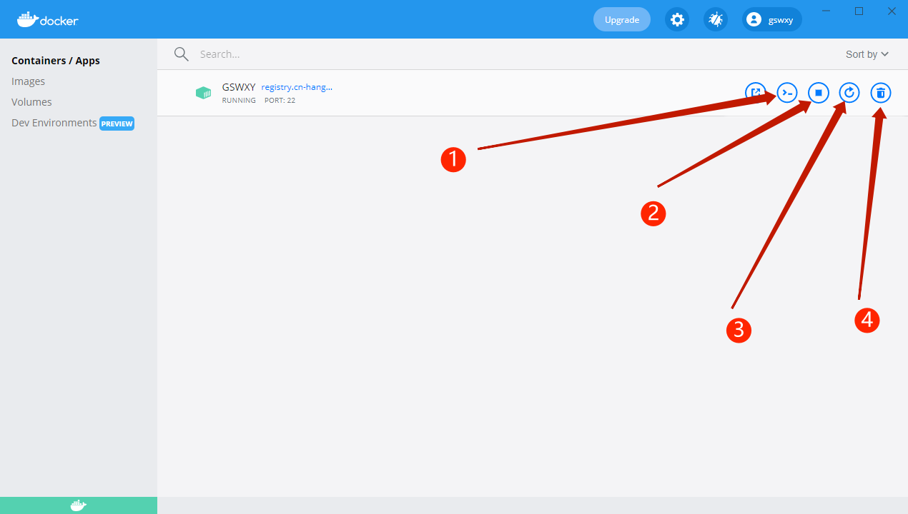
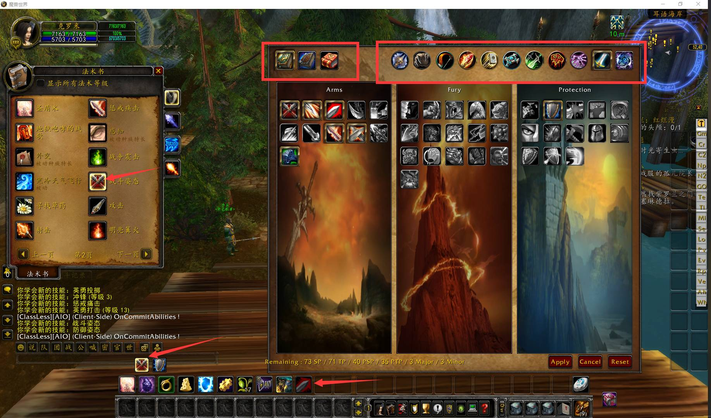

GSWXY-单机服务端Docker版
前言
该服务端是基于之前发布的耳语魔兽-单机服务端修复而来，并正式更名为GSWXY，之前的不再更新。本服务端使用Docker的方式编译运行，可无视你的系统环境、一键快速下载更新，运行稳定。本服务端专注于单机方向，由GSWXY编译，QQ群为938973736，欢迎加入交流！
特此声明：我不参与任何盈利项目，发布的所有服务端均为技术研究用，请勿用于任何商业用途，否则后果自负！
功能介绍
服务端所有功能模块均可自行配置，配置文件在configs文件夹内，主要有以下几个功能：
| 序号 | 功能 | 说明 | 对应MOD/Lua |
|---|---|---|---|
| 1 | 成就共享 | 同账户下成就互通 | mod-account-achievements |
| 2 | 自动平衡 | 副本动态调整怪物数值，方便单刷 | mod-autobalance |
| 3 | 自动复活 | 副本内如果死了，自动就近复活 | mod-auto-revive |
| 4 | 升级奖励 | 每10级奖励个东西，放个烟花 | congrats-on-level、fireworks-on-level |
| 5 | 登录奖励 | 新建角色给传家宝、武器技能、背包、声望 | mod-custom-login |
| 6 | 荣誉卫士 | 击杀主城卫兵获得荣誉 | mod-gain-honor-guard |
| 7 | 升级令牌 | 物品ID：701001，使用升1级（暂未添加掉落方式） | mod-item-level-up |
| 8 | 自动学习 | 升级自动学习对应技能 | mod-learn-spells |
| 9 | 宝宝幻化 | 生物ID：601072，SS和FS的宝宝幻化，NPC在耳语基地 | mod-morphsummon |
| 10 | 野兽大师 | 生物ID：601026，所有职业可带宠物，NPC在耳语基地 | mod-npc-beastmaster |
| 11 | 专业大师 | 生物ID：199999，瞬间提满专业技能，NPC在耳语基地 | mod-npc-free-professions |
| 12 | 幻化大师 | 生物ID：190010，不用解释了吧，NPC在耳语基地 | mod-transmog |
| 13 | 随机附魔 | 掉落、奖励和制造物品随机附魔 | mod-random-enchants |
| 14 | 主城传送 | 丰富了各个主城的传送门 | / |
| 15 | 死骑任务 | 死亡骑士跳过初始任务 | SkipDeathKnightStartingArea |
| 16 | 成就提升 | 每得到5点成就获得一点分配点数 | chengjiu.lua |
| 17 | 团本重置 | 使用5个徽章可重置团本 | tuanbencz.lua |
| 18 | 多功能宝石 | 功能太多了，右键炉石自己看吧 | 多功能宝石非常强大.lua |
| 19 | 耳语基地 | 右键炉石，传送-主要城市-耳语基地，有大量NPC | / |
- 以上未说明的均为官方默认设置，本地网站地址为
http://localhost。 - 你可使用Navicat SQL等工具连接数据库，数据库用户为
root，密码为gswxy.com。 - 你可使用Xshell等工具连接服务端容器，运行环境为Ubuntu，用户为
root，密码为gswxy.com。 - 你可使用Winscp等工具管理容器内文件，用户为
root，密码为gswxy.com，源码在Docker内的/azerothcore文件夹内，你可以按本网站的《Linux下编译Azerothcore源码 | GSWXY》自行编译更新。服务端在Docker内的/root/azerothcore文件夹内，本端自带lua，你可以上传lua文件到lua_scripts文件夹内，按自己需要拓展功能。
使用说明
Docker安装
请确保你的windows版本为Win10教育版、Win10专业版或Win10企业版的64位，Win7系统请自行百度安装，接下来进入Docker官网选择Windows版本下载，双击安装即可。接着下载Linux 内核更新包，双击运行安装即可。
容器下载
打开Windows系统的PowerShell，首先下载镜像：
docker pull registry.cn-hangzhou.aliyuncs.com/gswxy/gswxy:1.3 |
然后继续输入以下命令，构建运行基于这个镜像的容器：
docker run -itd --name GSWXY -p 8085:8085 -p 3306:3306 -p 3724:3724 -p 80:80 -p 22:22 --restart always registry.cn-hangzhou.aliyuncs.com/gswxy/gswxy:1.3 |
最后面gswxy:1.3为版本号，如果以后更新了2.0，请更改为gswxy:2.0`，以此类推。
服务端运行
输入上述命令后，容器会自动打开，容器内的服务端也会自动运行，双击任务栏里的docker图标，其中images是你下载的镜像，Containers/Apps是你构建运行基于上述镜像的容器，即服务端运行环境：

- 点击1，输入
screen -r auth或者screen -r world可以查看控制台，请注意：第一次启动请输入service mysql start，然后重启容器； - 点击2，即可停止容器（服务端）；
- 点击3，即可重启容器（服务端）；
- 点击4，即可删除容器（服务端），慎点。
右键系统右下角托盘Docker图标选择Quit Docker Desktop可以完全退出Docker。
账号注册
账号注册可选择网页注册或手动注册两种方式，推荐手动注册。
网页注册
请在浏览器输入http://localhost，注册账号即可，注册后可能会跳转到空白页，不必担心，已经注册好了。
手动注册
点击上图的选项1处，输入 screen -r world，然后输入以下命令：
account create $account $password |
例如我想创建用户名为1，密码为2的账户，则输入account create 1 2。
继续输入以下命令可提升为GM权限：
account set gmlevel $account #level #realmid |
例如我想将用户名为1的账户设置为最高权限的GM，则输入account set gmlevel 1 3 -1。
客户端补丁
本服务端适配纯净版魔兽世界335客户端，版本号为12340，点击此处下载，提取码为i0jb。
- 请在浏览器输入
http://localhost/tools/patch-zhCN-Y.MPQ下载客户端补丁，下载后放入你的魔兽世界客户端World of Warcraft\Data\zhCN目录。 - 请在浏览器输入
http://localhost/tools/GSWXY.bat下载客户端运行脚本，下载后放入你的魔兽世界客户端World of Warcraft目录，双击即可进入游戏。
公开测试服
请在QQ群（938973736）群文件内下载公开测试服客户端补丁和登陆器，请在浏览器输入http://wow.gswxy.com注册账号。
温馨提示：公开测试服仅为群友测试用，配置不高、延迟较大，建议以单机为主，但在我每次发布单机端时候会包含你公开测试服的角色数据。
更新日志
V1.1版本（20210913）
考虑到大家还是不习惯用命令行来管理和运行服务端，所以有了这次小更新：
- 修复了服务端启动时所有的红字错误；
- docker启动自动运行服务端容器，服务端容器开启后自动运行服务端，无需任何命令。
下载方法见上文容器下载和服务端运行部分，在此说明，之后的更新均为全新安装方式，如果你想保存你的角色数据，请自行备份数据库后导出导入。
V1.2版本（20210925）
严格来说，本Docker版应该叫做学习版，目的是教会大家编译、架设和修改，所以更新有点慢，毕竟每次更新我都要事先写一大堆教程，再加上平常比较忙，本次更新不多（但教程挺多的），更新说明：
- 每个职业衬衣随机附魔本职业一个遗产技能，且职业衬衣为世界范围掉落，概率为1‰。
下载方法见上文容器下载和服务端运行部分，并请按上文说明重新下载覆盖客户端补丁。
主教程参见《如何制作物品随机附魔 | GSWXY》和《如何制作装备和添加掉落 | GSWXY》，与之配套教程为：《Acore-world 数据库之 item-template 表全面解释 | GSWXY》、《DBC文件之ChrClasses.dbc全面解释 | GSWXY》、《DBC 文件之 item.dbc 全面解释 | GSWXY》和《Acore-world 数据库之各类 loot-template 表全面解释 | GSWXY》。
V1.3版本（20220122）
有一阵子没更新了，这次就小更新一下，更新说明：

- 添加了无职业系统，按N调出菜单，意思是打破职业，天赋、技能和雕文都可以全职业自由选择、自由组合；
- 去除了职业训练师，以适配无职业系统；
- 取消了所有物品的职业限制，以适配无职业系统；
- 推出专属客户端，升级为高清版，介绍和下载请参见《自夸下吧：应该是目前最好的高清客户端》；
- 重做客户端补丁，且更名为
patch-zhCN-Y.MPQ。
下载方法见上文容器下载和服务端运行部分，并请按上文说明重新下载覆盖客户端补丁（请自行备份原客户端同名文件），强烈建议使用高清专属客户端。
有喜欢无职业系统的，请自行提取源码（/root/azeroth-server/bin/lua_scripts/AIO_Server/classless）,本人不藏私。
重要声明
此Docker版本已停止更新，新版请移步。
 微信
微信 支付宝
支付宝